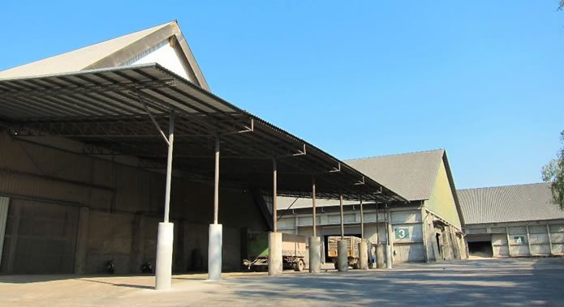

 Company Profile Chaicharoen Exproduce Co., LTD is a well-established company known for its reliability and high-quality in manufacturing and exporting Tapioca products since 1972. The company was founded by Mr. Thanachai Cholsaranont (Zhou Guang Cai) and had registered the capital of 15 million baht and increased to 65 million baht in 2009. Our company’s factory is located in Chonburi province of Thailand, with a short distance from 3 major ports - Bangprakong, Koh Sichang, and Laemchabang Port. The location of factory gives us advantages regarding cost of transportation and flexibility for export business. Also, our experience in Thailand Tapioca industry ensures the reliability and quality of our products. Our production capacity for Tapioca Hard Pellets and Tapioca Residue Pellets is approximately 180,000 Metric Tons per year. Our storage capacity for Tapioca chips is about 100,000 Metric Tons. Our Tapioca Pellets product is certified in accordance with GMP+ Feed Safety Assurance. ประวัติบริษัท บริษัท ชัยเจริญพืชผลเอ็กสปอร์ต-อิมปอร์ต จำกัด ก่อตั้งโดย นายธนชัย ชลศรานนท์ และดำเนินธุรกิจส่งออกผลิตภัณฑ์มันสำปะหลังมาตั้งแต่ปี 2515 จนถึงปัจจุบัน บริษัทฯมุ่งเน้นความซื่อตรงในการดำเนินธุรกิจและคุณภาพของสินค้าเป็นสำคัญ จนได้รับความไว้วางใจจากลูกค้าทั้งใน และต่างประเทศมาเป็นเวลานาน สถานที่ผลิตสินค้าของบริษัทฯตั้งอยู่ในจังหวัดชลบุรี ซึ่งใกล้กับท่าเรือสำคัญของประเทศไทยได้แก่ ท่าเรือบางปะกง, ท่าเรือเกาะสีชังและท่าเรือแหลมฉบัง ทำให้บริษัทฯมีความได้เปรียบด้านการขนส่งเพื่อการส่งออกและสามารถส่งออกสินค้าได้หลายทาง ด้วยประสบการณ์อันยาวนานของบริษัทฯ ในอุตสาหกรรมมันสำปะหลัง บุคลากรของบริษัทจึงมีความเชี่ยวชาญในการผลิตและส่งออกผลิตภัณฑ์มันสำปะหลัง และสามารถตอบสนองความต้อง การของผู้ซื้อได้หลากหลาย บริษัทฯมีกำลังการผลิตมันสำปะหลังอัดเม็ดและกากมันสำปะหลังอัดเม็ดอยู่ที่ประมาณ 180,000 ตันต่อปี สามารถเก็บรักษามันสำปะหลังเส้นได้ประมาณ 100,000 ตัน และสินค้ามันสำปะหลังอัดเม็ดได้ผ่านการรับรองมาตรฐาน GMP+ แล้ว ผู้ซื้อจึงมีความมั่นใจได้ในคุณภาพและมาตรฐานของสินค้า
|